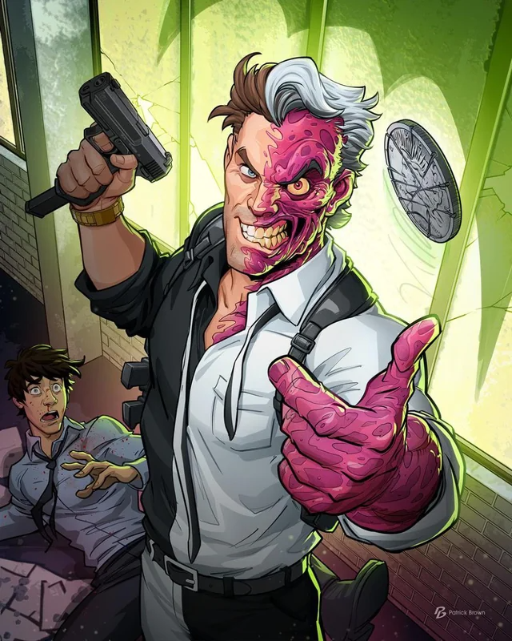
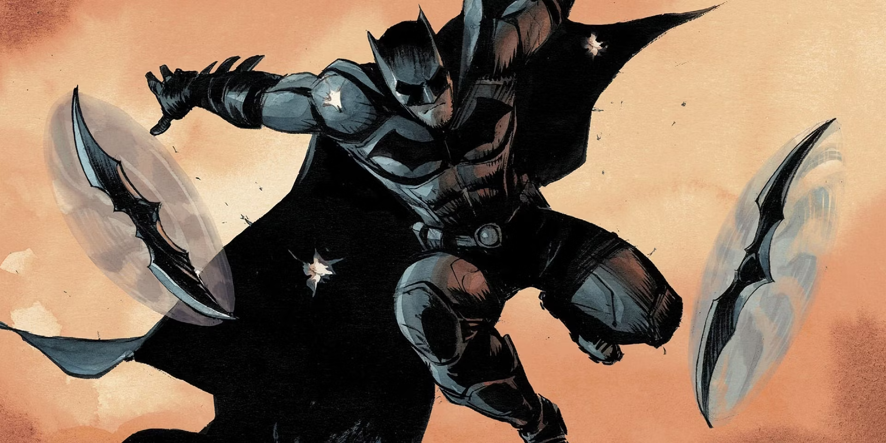

Optando por la cautela y la eficacia, Batman decidió usar su dispositivo de desorientación sónico. Sabía que el elemento de sorpresa aún jugaría a su favor, dado que Dos Caras y sus secuaces no esperarían un ataque de esta naturaleza. Se posicionó estratégicamente en un punto alto, desde donde podía ver la mayoría del salón principal, y activó el dispositivo.
El efecto fue inmediato y caótico. Los criminales se agarraban las cabezas, confundidos y desorientados por el agudo zumbido que solo ellos podían oír, gracias a la tecnología dirigida del dispositivo. Aprovechando el momento, Batman se lanzó a la acción, neutralizando a los secuaces de Dos Caras uno tras otro con una mezcla de artes marciales y tecnología no letal.
Con los secuaces fuera de combate, solo quedaba Dos Caras, quien, anticipando un enfrentamiento directo, había tomado a un rehén como escudo humano. El rostro de Dos Caras, dividido entre la cordura y la locura, mostraba una sonrisa torcida, desafiante.
Batman se encontraba ante otro dilema crítico:
Opción 1: Negociar con Dos Caras, tratando de apelar a su lado más racional y humano, Harvey Dent, con la esperanza de que liberara al rehén sin más violencia. Esta opción era arriesgada, dado el estado mental impredecible de Dos Caras.
Opción 2: Utilizar un batarang especializado para incapacitar a Dos Caras de manera no letal, arriesgándose a que el villano pudiera herir al rehén en un acto reflejo. Esta opción requería una precisión milimétrica y un timing perfecto.
¿Cuál debería ser el próximo movimiento de Batman?
|
Opción 1
 |
Opcion 2
 |